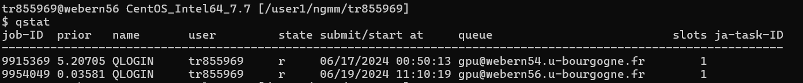

This guide provides detailed steps for using qlogin and qsub commands on the CCUB server for job management with Sun Grid Engine (SGE).
The qlogin command allows you to start an interactive session on a compute node.
Open a Terminal
Start an Interactive Session
qlogin -q gpu
End the Session
exit or close the terminal window.The qsub command is used to submit batch jobs to the queue.
Prepare a Job Script
my_job.ksh Details#!/bin/bash
#$ -N my_job_name
#$ -q batch
#$ -o output_file.log
#$ -e error_file.log
#$ -cwd
python myscript.py
Submit the Job
qsub:qsub -q gpu my_job.ksh
Check Job Status
qstat command:qstat

Delete a Job
qdel command followed by the job ID:qdel <job_id>
qdel 9915369
For further assistance, contact the CCUB support team at ccub@u-bourgogne.fr.
Documents generated by
Taiabur Rahman
https://taiaburbd.github.io/
taiaburbd@gmail.com